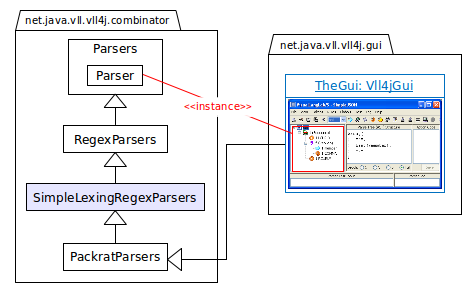
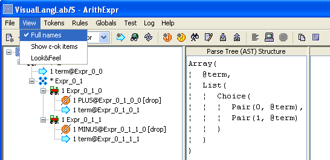

).
The tool-tip text of the node is altered to indicate the source of the problem.
The following types of error are detected:
).
The tool-tip text of the node is altered to indicate the source of the problem.
The following types of error are detected:
The UML class diagram in Figure-1 below is an abstraction of VisualLangLab's relationship with Scala's parser combinators.

Figure-1. Class diagram relating VisualLangLab with Scala classes
The GUI owns an instance of vll.core.VllParsers, which indirectly extends
RegexParsers with
PackratParsers.
The grammar-trees effectively become members of that instance
(of VllParsers) as though defined as follows:
lazy val someParser: scala.util.parsing.combinator.Parser[Any] = ...However, because of the way Scala's parser combinators work, it is not necessary to generate or compile any code to obtain this effect.
In terms of the Essential Jargon in the
User Guide, the GUI
(by owning an instance of VllParsers) is a parser, while
objects like someParser are parser-rules that
bring grammar-trees to life. The line of Scala
code above shows that someParser is of type
Parser
which of course is different from the idea of parser in the Essential Jargon.
The spelling of the two terms has a subtle difference -- the case of the inital
letter. In the rest of this document we will use Parser (with an
initial capital) consistently to mean Scala's
Parser,
not the Essential Jargon's parser.
The following descriptions explain the function and role of the other classes
in the vll (VisualLangLab) package.
This class is the built-in simple
lexer.
It extends the Scala API's
RegexParsers,
overriding the literal(String) and regex(Regex) methods
with versions implemented on top of the lexer. The class does not add anything to
RegexParsers's
interface, but changes the behaviour of the literal() and
regex() methods in two ways demonstrated by the code below.
object Main extends SimpleLexingRegexParsers {
def main(args: Array[String]) {
/**** priming the built-in lexer ... ****/
literal("begin"); literal("end");
regex("[a-z]+".r); regex("\\d+".r)
/**** define a parser ... ****/
lazy val line = "begin" ~ rep("[a-z]+".r | "\\d+".r) ~ "end"
/**** test the parser ... ****/
println(parseAll(line, "begin hi 1984 i am 2011 end"))
println(parseAll(line, "begin the ending of 2010 end"))
println(parseAll(line, "begin the end of 2010 end"))
}
}The first change is quite obvious: the two lines of lexer-priming code. The built-in lexer must be setup by making it aware of all literal and regex tokens before they are actually used. The second difference is behavioural, and can only be seen in the output of the code (see below).
[1.28] parsed: ((begin~List(hi, 1984, i, am, 2011))~end)
[1.29] parsed: ((begin~List(the, ending, of, 2010))~end)
[1.15] failure: string matching regex `\z' expected but `o' found
begin the end of 2010 end
^
The failure message in the example above is quite clear: nothing more is
expected after the end in the middle of the input line, so the parser
complains about the remaining text.
But compare this with the output obtained when object Main extends
RegexParsers
instead of SimpleLexingRegexParsers (see below).
[1.28] failure: `end' expected but end of source found
begin hi 1984 i am 2011 end
^
[1.29] failure: `end' expected but end of source found
begin the ending of 2010 end
^
[1.26] failure: `end' expected but end of source found
begin the end of 2010 end
^
What's happening here is that the end in the input text is actually
matching the token regex("[a-z]+".r), not the token
literal("end"). So the parser complains about the missing
end.
The essential point here is that the built-in lexer treats tokens created with
literal() as reserved keywords with higher priority than tokens
created with regex(). So, although the regular-expression
[a-z]+ matches end, the literal token created
(implicitly) for "end" takes precedence, and the
end in the input is not allowed to match the token created (implicitly)
for "[a-z]+".r. The lexer also uses the longest
possible section of input that matches any token. So, the
word ending is treated as an instance of the token
regex("[a-z]+".r), not as an instance of literal("end")
followed by an instance of regex("[a-z]+".r).
The lexer depends on
RegexParsers's
standard mechanism for handling whitespace (handleWhiteSpace()).
The class vll.gui.VllGui, which extends this class overrides the
method to provide support for comments as well.
The focus at this time is on functionality, so the performance of the lexer now is quite poor. However, it is hoped to improve the design of the lexer in future versions to alleviate this problem.
This class has no dependencies on any other component of VisualLangLab, and so may be used as a standalone lexer. A version of this code can be found at simple-lexing-regex-parser.
This trait adds functionality to the "~" and "|" combinators, facilitating smoother integration with a graphical user-interface, and transforming the parser's result to a more user-friendly structure.
Sequence nodes are converted into a
Parser
that returns an Array[Any] instead of instances of the class
~.
Arrays are simpler to handle, and lead to less complex code
in actions or application programs (see examples in
Using the API). A
Parser
produced from a Sequence node also handles the drop annotation
on child nodes, combining the child nodes with the "<~", "~>", and "~" functions
as required. The generated
Parser
also handles the commit annotation on a child node.
The Choice node is converted into a
Parser
that returns a Pair[Int,Any].
The first member of the Pair is a
(0-based) index of the matching alternative.
This is the key to developing the parser separately from AST handling code
(see examples in Using the API).
Developers using the Scala API's "|" combinator directly can often not separate the
action-code from the parser as the identity of the matching alternative is not retained.
This class extends vll.core.SimpleLexingRegexParsers, and adds
all needed finishing touches to the parser framework.
VisualLangLab provides a trace annotation
(see Editing the Grammar Tree) that
allows you to conveniently enable tracing of any parser-rule or part of a
parser-rule. The output generated by this facility is properly indented
to indicate nesting of traced levels, and is more helpful than the log() method in
Parsers.
The trace annotation on any grammar-tree node is toggled by using the grammar-tree's pop-up context menu.
VisualLangLab gives every grammar-tree node a unique name based on the name of the parser-rule and the node's position in the tree (see Figure-2 below). The names are used for identifying nodes in error reports or trace logs. To reduce clutter The GUI does not normally display node names, but they can be made visible by selecting View -> Full names from the main menu.

Figure-2. Node names in a grammar-tree
The GUI checks all parser-rules for certain types of errors,
and will flag offending grammar-tree nodes by overlaying them with the error mark
().
The tool-tip text of the node is altered to indicate the source of the problem.
The following types of error are detected:
Using parser-rules that can match the empty string can lead to difficult-to-fix problems. Redesign your grammar to use multiplicity in a suitable way and avoid the need for such parser-rules.
Sequence and Choice nodes must have at least two child nodes. Sequence nodes must also have at least one child node that contributes to the AST (not all child nodes may be dropped, or have multiplicities of 0 (not) or = (guard)). RepSep nodes must have exactly two child nodes. Root nodes must have one child node. Nodes that violate those requirements will be flagged.
Action code associated with any grammar-tree node (see AST and Action Code) is checked for correct syntax, and any errors are flagged.